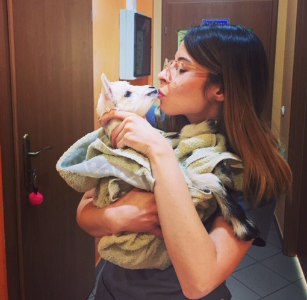
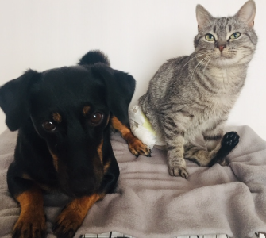
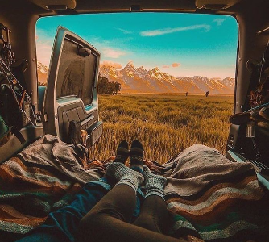

As a veterinarian in a small clinic since 2018, I have developed a deep love and compassion for animals. My time working in this environment has allowed me to refine my skills in patience, inquiry, and communication with both pets and their owners.
With a focus on providing high-quality care, I have gained experience in various veterinary procedures and treatments. My passion for helping animals, combined with my experience and dedication to my work, has made me a valued member of the clinic and a trusted provider of veterinary care.

I am the proud owner of two wonderful animals, Kapsel the dog and Cytryna the cat. Kapsel was rescued from a shelter and has come a long way since then. When I first brought him home, he was scared and aggressive, but with time, patience, and love, Kapsel has transformed into a smart and loving companion. He is now an expert at performing tricks and has a playful and adventurous spirit, especially when it comes to digging and exploring the woods.
Cytryna, my beloved cat, is a determined and curious feline who has overcome great challenges. Despite losing one hind paw and having difficulty with the other, Cytryna is fearless in her exploration of the world. She loves to sit on my shoulder and take in all the sights and sounds around her. Her unwavering spirit and zest for life are truly inspiring.
Together, Kapsel and Cytryna bring endless joy and love into my life and I am grateful for their companionship every day.

Together with my husband, I embarked on a journey of a lifetime by building a self-made camper-van. Since 2023, we have been traveling across Europe with our furry companions Kapsel and Cytryna by our side.
As we journey through the continent, we are constantly amazed by the beauty and diversity of the landscapes we encounter, from vast wilderness areas to bustling cities. Along the way, we have also had the opportunity to meet many kind and interesting people, each with their own unique stories and perspectives.
The vanlife has allowed us to live life on our own terms and to experience the world in a way that is truly special and meaningful. We are grateful for each day on the road and the adventures that lie ahead.